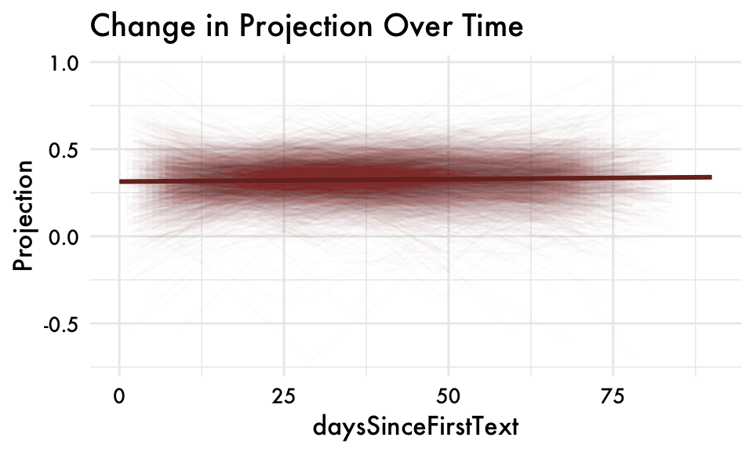
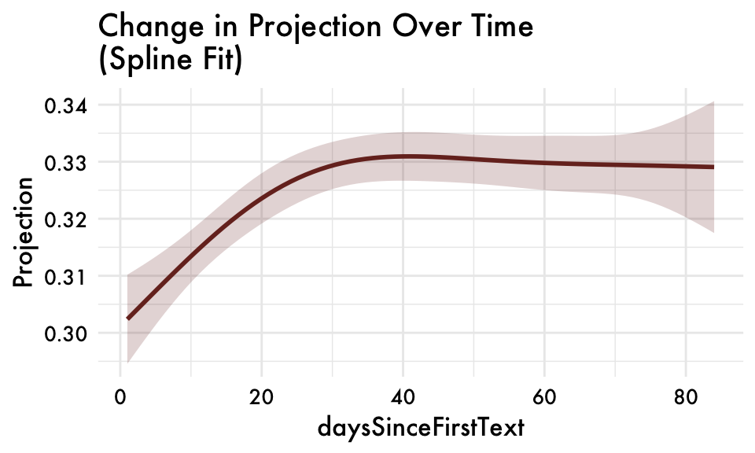
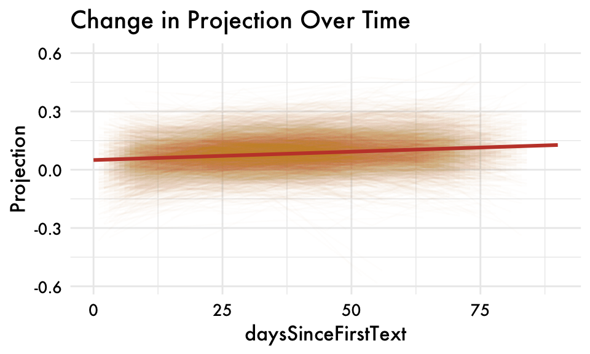
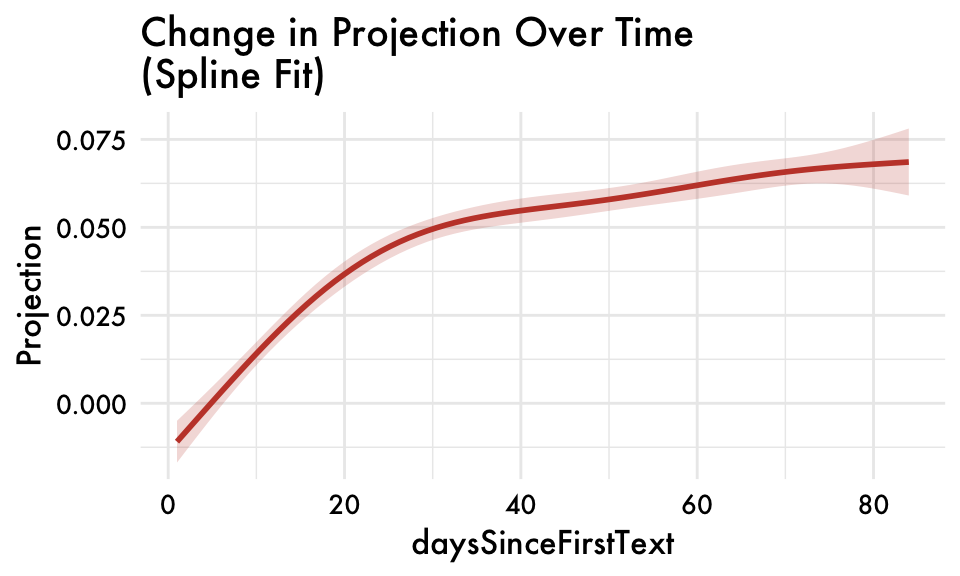
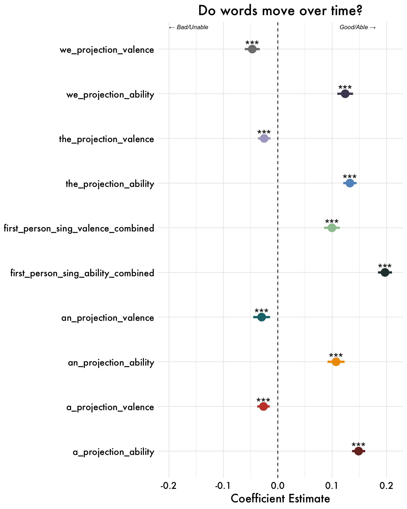
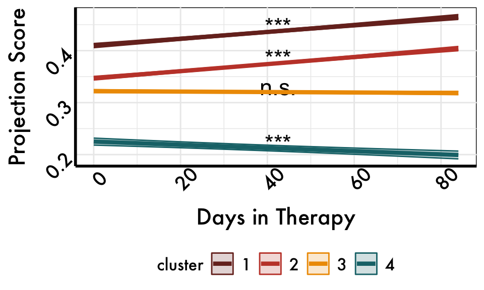

I-Projection Results
Steven
2025-12-17
Q1.) Do projections move closer to the positive end of the axis over time?
Note. Data are aggregated at the assessment level and coefficients are unstandardized.First person sing. = means of I, me, and my projections for each participant.
First-person sing. valence projections
first_person_sing_valence_combined individual variation
first_person_sing_valence_combined spline fit
First-person sing. able projections
Note. Data are aggregated at the assessment level and coefficients are unstandardized.First person sing. = means of I, me, and my projections for each participant.
first_person_sing_ability_combined
first_person_sing_ability_combined individual variation
first_person_sing_ability_combined spline fit
Scaled Change over time (standardized coefficients)
Good
Able
Q2.) Do our projection measures predict changes in internalizing symptoms over time?
Results are condensed to be for the first-person singular valence and ability projections only (combined).
Valence Projection
Ability Projection
Q3.) Are these predictions robust to other linguisitic features?
Results are condensed to be for the first-person singular valence and ability projections only (combined).
Valence Projections
Ability Projections
Note: The ability models include percentage variables for “able” and “unable” language. The pct_unable variable has substantial missing data (~74% of observations) as “unable” language is relatively rare. As a result, these models are estimated on a subset of participants who exhibit variation in ability-related language.
Q4) Is this occurring for all words, or is “I” unique in some way?
Changes in Meaning over Time

Track with Changes in Symptoms

